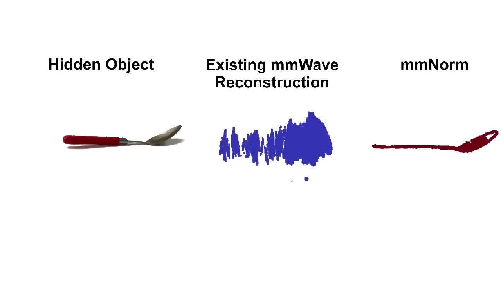
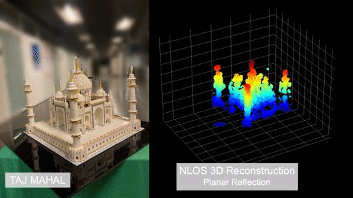

{kind=link}
About Me
I am a fourth year PhD student at MIT, advised by Prof. Fadel Adib.
In my work, I explore how wireless signals can be used to sense and percieve the physical world in novel ways. Specifically, my current work focuses on building advanced non-line-of-sight perception using millimeter-wave (mmWave) signals, with applications spanning robotics, augmented reality, shipping and logistics, and smart homes. My work has been recognized with multiple awards, including the MIT Jacobs Presidential Fellowship, Amazon Robotics Thriving Stars Fellowship, Best Masters of Engineering Thesis Award at MIT, ACM Mobisys Best Paper Finalist and IEEE RFID Best Paper award.
I have also had the pleasure of working with Prof. Haitham Al Hassenieh as a visiting PhD student in 2023. Before starting my PhD, I recieved my Bachelors in Electrical Engineering and Computer Science from MIT in 2021.
Awards
- ACM Mobisys Best Paper Finalist (2025)
- ACM Mobisys Best Poster (2025)
- Amazon Robotics Thriving Stars Fellowship (2025)
- IEEE Conference on RFID Best Paper Award (2023)
- IEEE Conference on RFID Best Paper Finalist (2023)
- MIT Charles & Jennifer Johnson MEng in AI and Decision-Making Thesis Award (2023)
- MIT Jacobs Presidential Fellowship (2022)
- MIT George C. Newton Undergraduate Laboratory Award (2020)
Publications
* indicates equal contribution
|

|
Laura Dodds, Tara Boroushaki, Kaichen Zhou, Fadel Adib ACM Conference on Mobile Systems, Applications, and Services (MobiSys), June 2025. Best Paper Finalist, Best Poster Paper Poster Codebase |

|
Maisy Lam*, Laura Dodds*, Aline Eid, Jimmy Hester, Fadel Adib IEEE International Conference on Computer Communications (InfoCom), May 2025. Paper |
|

|
Laura Dodds, Hailan Shanbhag, Junfeng (Jayden) Guan, and Haitham Al Hassanieh ACM Conference on Mobile Computing and Networking (MobiCom), Oct. 2024. Paper |
|
|
Laura Dodds, Nazish Naeem, Aline Eid, Fadel Adib IEEE International Conference on RFID, June 2023. Best Paper Finalist Paper |

|
Tara Boroushaki, Maisy Lam, Weitung Chen, Laura Dodds, Aline Eid, Fadel Adib IEEE International Conference on RFID, June 2023. Best Paper Paper |
|
|
Tara Boroushaki, Laura Dodds, Nazish Naeem, Fadel Adib RSS'22 Special Issue in Autonomous Robots - Invited Paper Paper |
|
|
Laura Dodds, Isaac Perper, Aline Eid, Fadel Adib ACM Conference on Mobile Computing And Networking (MobiCom), Oct. 2023. Paper |
|
|
Tara Boroushaki, Maisy Lam, Laura Dodds, Aline Eid, Fadel Adib Networked Systems Design and Implementation (NSDI), June 2022. Paper |

|
Tara Boroushaki, Laura Dodds, Nazish Naeem, Fadel Adib Robotics: Science and Systems (RSS), June 2022. Paper |
Talks
- Non-Line-of-Sight 3D Object Reconstruction via mmWave Surface Normal Estimation, Mobisys 2025. Slides
- Around the Corner mmWave Imaging in Practical Environments, Mobicom 2024. Slides
- New Ways for Sensing the Physical World, Co-Presented with Sayeed Saad Afzal, MIT Media Lab Member Event 2024.
- X-AR: Augmented Reality with X-Ray Vision, Co-Presented with Maisy Lam, Presentation & Live Demo, RFID Journal Live 2024.
- Fine-Grained RFID Localization with a Handheld Device, Mobicom 2023. Slides
- Software-Controlled Polarization for Longer Range RFID Reading and Localization, IEEE RFID 2023. Slides
Service
- Reviewer: ICCV, TMC, TNET, IEEE Network Magazine, JSAC, JRFID